Zachary Kaplan
Math 340 Assignment 6 3/1/18
Contents
Part 1
order = 3:12; f = @(x) 1./(1 + 10*x.^2); max_err = zeros(size(order)); for n = order X = linspace(-1, 1, n + 1); Y = f(X); p = pfit(X, Y); figure hold on title(sprintf('Order %d Interpolation', n)); scatter(X, Y); % The points. XN = linspace(-1, 1, 1e3); % Domain YP = p(XN); YF = f(XN); plot(XN, YP); % The interpolation plot(XN, YF); % The function. legend('Sample Points', 'Interpolation', '1/(1 + 10*x^2)') max_err(n - order(1) + 1) = norm(YP - YF, Inf); fprintf('Max Error for Order %2d: %e\n', n, max_err(n - order(1) + 1)); end figure plot(order, max_err); title('Error vs. Order'); ylabel('Maximum Error'); xlabel('Order of Interpolation'); fprintf('\nFunctions used:'); dbtype pfit
Max Error for Order 3: 3.086579e+02
Max Error for Order 4: 6.004295e+02
Max Error for Order 5: 4.384108e+02
Max Error for Order 6: 6.004269e+02
Max Error for Order 7: 5.274267e+02
Max Error for Order 8: 7.341927e+02
Max Error for Order 9: 5.690260e+02
Max Error for Order 10: 6.004241e+02
Max Error for Order 11: 5.872031e+02
Max Error for Order 12: 1.143222e+03
Functions used:
1 function Pn = pfit(X, Y)
2 % pfit finds the polynomial fitting points defined by the cocentric vectors
3 % X and Y. NB: X and Y must have the same length.
4
5 % Force X to be a row vec.
6 X = reshape(X, 1, length(X));
7 % Force Y to be a row vec.
8 Y = reshape(Y, 1, length(Y));
9
10 % Initialize memoization for dd (NxN mat).
11 mem = NaN(length(X));
12
13 function y = pn(x)
14 y = 0;
15 for i = 1:length(X)
16 [diff, mem] = dd(1, i, X, Y, mem);
17 % The i'th column of y is Ni evaluated on each input x,
18 % multiplied by [y_1, ..., y_i]
19 y = y + diff*newton(x, i, X);
20 end
21 end
22
23 Pn = @pn;
24 end
25
26 function ni = newton(x, i, X)
27 % newton returns the ith Newton function from the length(X) - 1 order
28 % Newton basis as defined by vector X evaluated at x
29 % NB: X must be a row vector.
30 % returns y as a column vector.
31
32 % Force x to be a col vec.
33 x = reshape(x, length(x), 1);
34
35 % \Pi_{j = 1}^{i-1} (x - X_j)
36 ni = prod(x - X(1:i-1), 2); % Product along column dimension
37 end
38
39 function [diff, mem] = dd(i, j, X, Y, mem)
40 % dd returns the divided difference [Y_i, ..., Y_j] with points (X_i, Y_i)
41
42 % Handle error case
43 if i > j
44 error('i may not exceed j');
45 end
46
47 % Check memoization
48 if not(isnan(mem(i, j)))
49 diff = mem(i, j);
50 return
51 end
52
53 % Compute unknown value
54 if i == j
55 diff = Y(i);
56 else
57 [ld, mem] = dd(i+1, j, X, Y, mem);
58 [rd, mem] = dd(i, j-1, X, Y, mem);
59 diff = (ld - rd) / (X(j) - X(i));
60 end
61 mem(i, j) = diff;
62 end
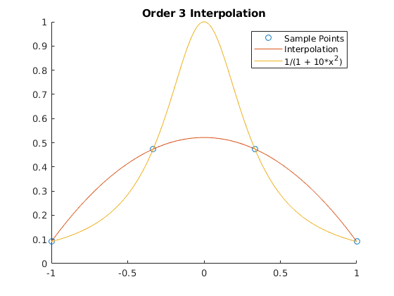  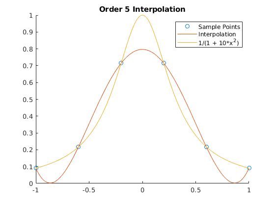 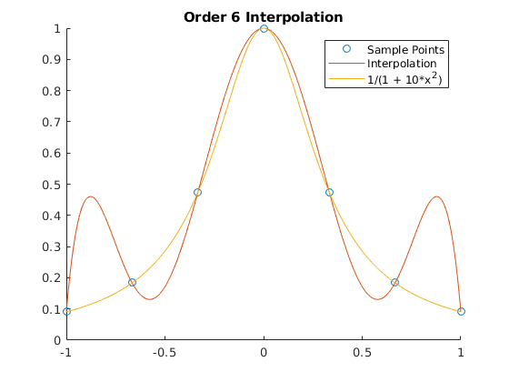 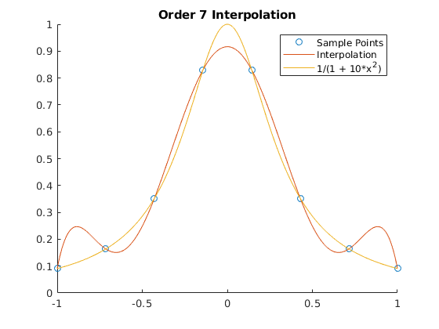 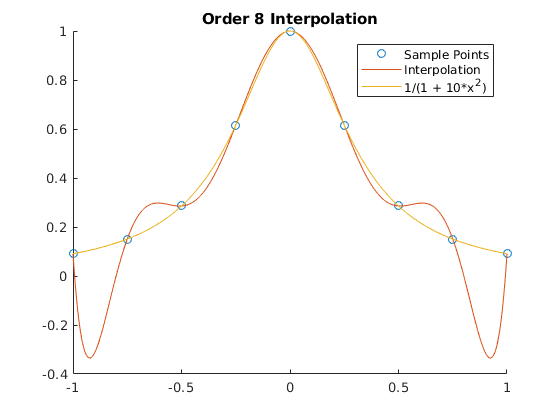 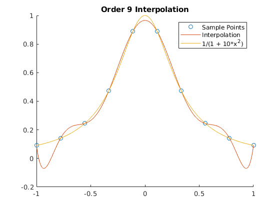 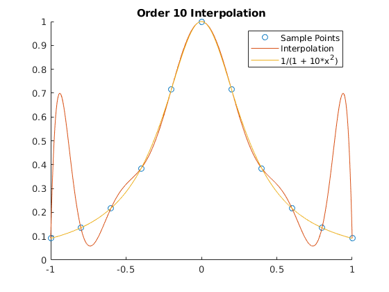 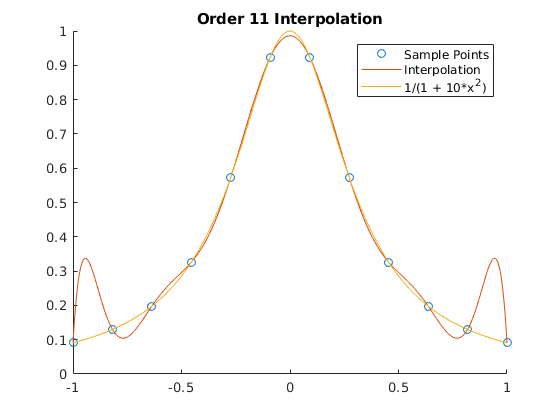 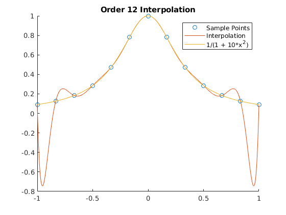 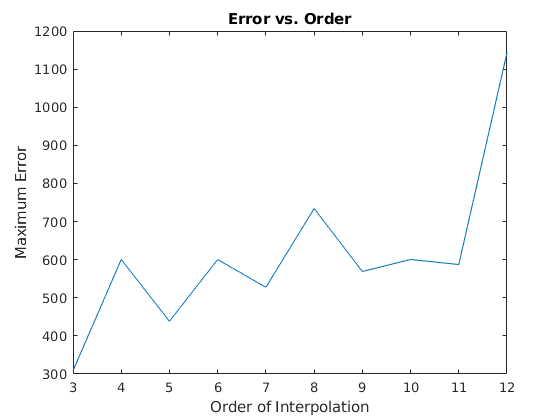
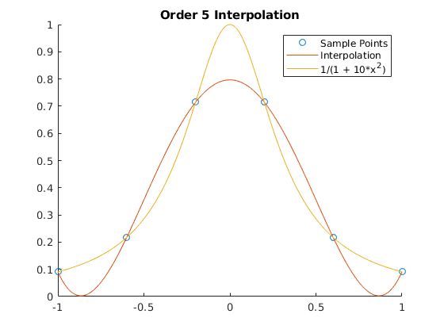 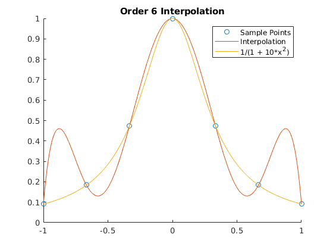 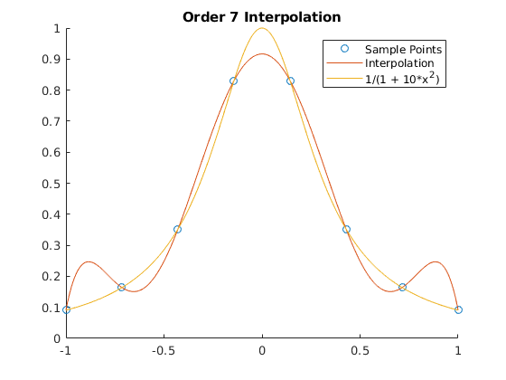 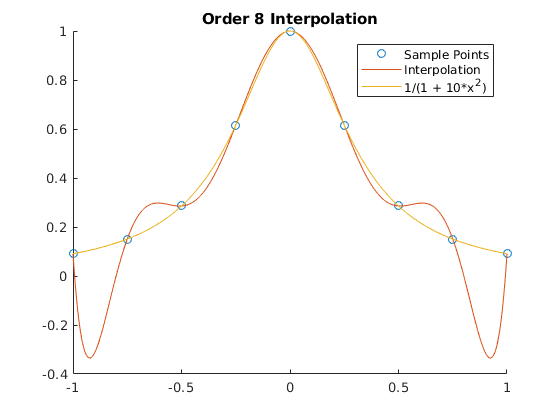 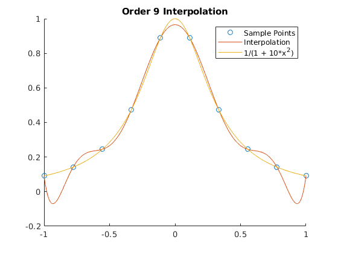 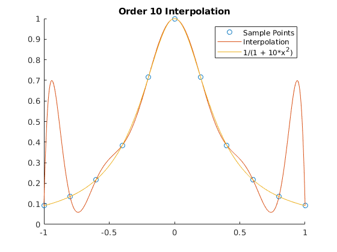 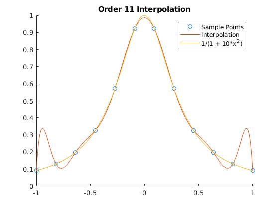 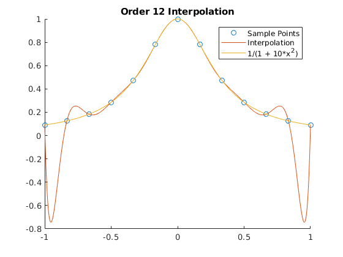 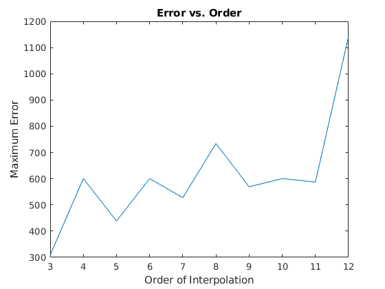 Part 2
n = 50; f = @(x) 1./(1 + 10*x.^2); X = linspace(-1, 1, n); Y = f(X); pp = spline(X, Y); figure hold on title(sprintf('Spline with %d points', n)); scatter(X, Y); % The points. XN = linspace(-1, 1, 1e3); % Domain YP = ppval(pp, XN); YF = f(XN); plot(XN, YP); % The spline. plot(XN, YF); % The function. legend('Sample Points', 'Spline', '1/(1 + 10*x^2)') max_err = norm(YP - YF, Inf); fprintf('Max Error for Spline with %d points: %e\n', n, max_err);
Max Error for Spline with 50 points: 1.959778e-05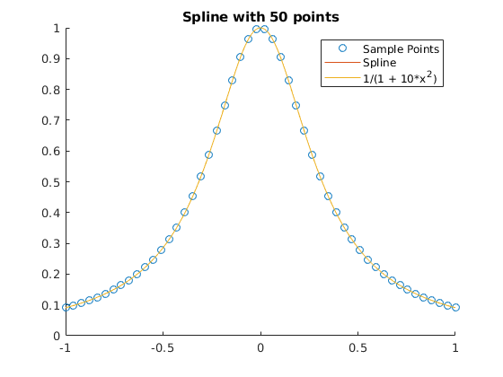